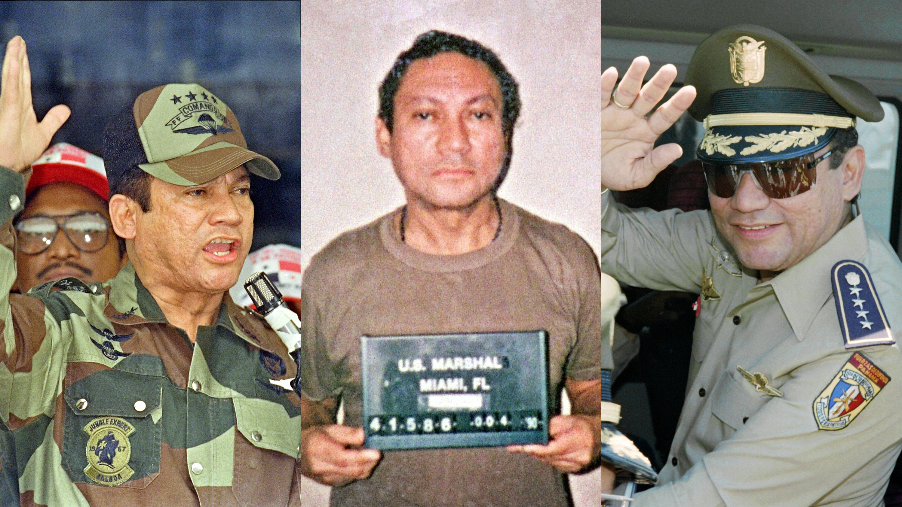

Categories::Dictatorship; coup; Operation Condor; international armed conflict; truth commission.
Actors: Guardia Nacional, the armed forces of Panama (also known as Fuerzas de Defensa); various Panamanian political parties; Panamanian civil organisations; Government of the United States of America. The work of the Comisión de la Verdad reports 110 cases of victims of state violence that were investigated and documented, a total comprising 70 assassinations and 40 enforced disappearances.
1968 : On October 11, forces of the Guardia Nacional effected a coup d’état, deposing elected president Arnulfo Arias. The main legislative body, the Asamblea Nacional, was closed. Civil and political rights were restricted, and many citizens were violently persecuted.
1969 : General Omar Torrijos took control of the government.
1970 : Union leader Heliodoro Portugal was detained by the armed forces, killed, and his body forcibly disappeared.
1971 : Colombian priest Jesús Héctor Gallego was kidnaped in the Veraguas province by members of the Guardia Nacional. He was then killed and forcibly disappeared.
1977 :A delegation from the Inter-American Commission on Human Rights visited Panama. A report on human rights situation was produced in 1978.
1981 : General Torrijos died in an accident.
1983 : Manuel Antonio Noriega took control of the armed forces and de facto control of the government. The Guardia Nacional became the Fuerzas de Defensa, increasing its size and budget.
1985 : Physician and guerrilla Hugo Spadafora was tortured, killed, and beheaded by agents of the Fuerzas de Defensa. Spadafora had openly criticised Noriega who, in response, arranged the former’s killing. Protests spark across the country.
1987 : Mass protests against the Noriega regime occured in Panama. The organisation known as Cruzada Civilista led the calls to protest, which were violently repressed by the government.
1989 : Albrook Massacre. Sectors of the armed forces attempted a coup against Noriega. The leaders of the uprising were subsequently tortured and killed.
1989 : On December 20, troops of the U.S. invaded Panama, under command of the George H.W. Bush administration. Hundreds of Panamanian citizens were killed, and the cities were looted.Noriega was captured by U.S. forces and prosecuted abroad for drug trafficking.
1989 : While Panama was still under U.S. occupation, Guillermo Endara became president, based on the results of the last held election.
Memory initiatives Informe de la Comisión de la Verdad de Panamá. “…la Verdad os hará libres” (2002): document detailing the work of the commission, published by the Defensoría del Pueblo. https://www.defensoria.gob.pa/wp-content/uploads/2021/06/Informe-de-la-Comision-de-la-Verdad.pdf Case Heliodoro Portugal versus Panama (2008). After a long judicial process, a sentence of the Inter American Court of Human Rights determines the Panamanian state’s responsibility in this case of enforced disappearance. Friendly settlements in Case 13,017 Families of Victims of Panama’s Military Dictatorship (2019). With IACHR mediation, the Panamanian state and two organisations of victims of the dictatorship reach an agreement comprising, among other measures: recognition of state responsibility, memory initiatives, and reparative measures. Case 13017 A - Between the Panamanian state and the COFADEPA-HG Case 13017 C - Between the Panamanian state and the COFADECHI
Sites of Memory Cuartel Los Pumas: barracks located in the Tocumen neighbourhood, Panama City. In 1999 the first human remains of victims of state violence were found at this location. As the remains were buried in mass graves, long judicial processes have been required to identify them.
Organisations Comité Panameño por los Derechos Humanos (CPDH): an organisation active since 1987, working on different human rights issues. Coordinadora Popular de Derechos Humanos de Panamá (COPODEHUPA): a civil organisation founded in 1986 with the aim of providing support in cases of human rights violations. Comité de Familiares de Asesinados y Desaparecidos de Panamá “Héctor Gallego” (COFADEPA), Comité de Familiares de Asesinados y Desaparecidos de Chiriguí (COFADECHI): civil organisations of relatives of victims of human rights violations during the dictatorship period. Comisión de la Verdad: A body created in 2001 at the behest of various civil organisations, with the aim of investigating cases of victims of state violence that occurred from 1968 to 1989. Comisión 20 de Diciembre 1989: A commission created via an Executive Order in 2016 with the aim of investigating human rights violations that occurred during the U.S. invasion of Panama.